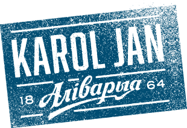

karol jan
hello honey!
hello honey!
Karol Jan Hello Honey! – цёмна-бурштынавае
мядовае пiва з багатым смакам i лёгкай гарчынкай.
мядовае пiва з багатым смакам i лёгкай гарчынкай.
Шчыльнасьць11,0%
Алкаголь3,8%
Горыч10 IBU
Спецыяльнае піва мае насычаны цёмна-бурштынавы колер. Крыху востры, кісла-салодкі смак утрымлівае мядовыя ноткі і лёгкую гарчынку ў посмаку. Асаблівы лагер перадае яркі водар карамелі. Цела піва лёгкае, пена прыемнага крэмавага адцення.
Зварана з дадаваннем араматызатара мядовага.